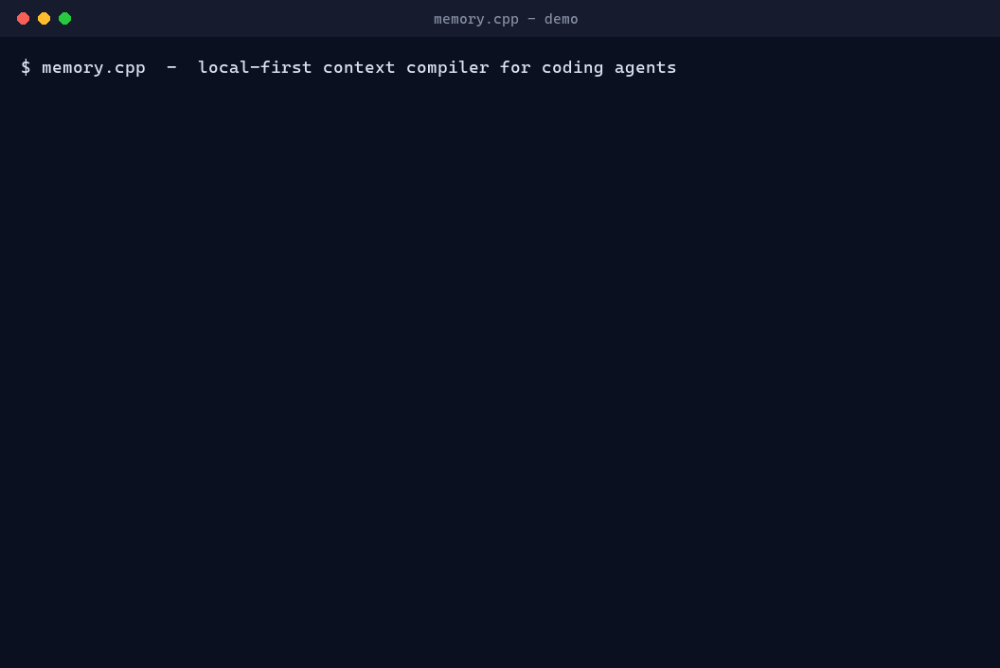
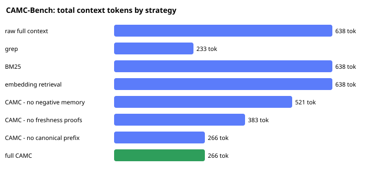

Cache-aware repo memory for coding agents.
Remember more. Send less. Cache smarter.
memory.cpp turns repository history — decisions, fixes, traces, tests, rules — into freshness-proven, security-filtered, cache-stable context packs before the model sees the request.
The cheapest token is the one the model never has to process. memory.cpp reduces prompt-side waste and estimated KV pressure — it does not compress a provider's KV cache.

Every number is reproducible — run memory bench camc and python scripts/benchmark.py.
Unmanaged context is expensive at scale.
A prompt can be technically valid while still being wasteful, stale, unsafe, and impossible to cache. Coding agents are long-horizon — they rebuild the same context every turn.
Repeated prefill
The same repo facts and traces are reprocessed every related turn — more compute before the first token.
KV-cache growth
Every unnecessary input token adds attention state, lowering concurrency and complicating scheduling.
Cache misses
Stable facts mixed with task text, timestamps, and logs defeat prompt caching and prefix reuse.
Stale context
Obsolete docs and prior failed attempts get retrieved because they look relevant — wrong patches follow.
Unmanaged memory
Memory grows with no proof, lifecycle, or contradiction handling — a reliability and security risk.
It's a compiler problem
Not a retrieval problem. Decide what to keep stable, what is fresh, what to exclude, what to rehydrate.
Repo history → a verified, cacheable context pack.
memory.cpp sits after retrieval but before inference: compilation, cache layout, exclusion, proof, and measurement.
MemoryIR
A typed IR for repo facts, decisions, traces, and tests — each with source anchor, trust, freshness, sensitivity, volatility, token cost, and cache role.
Stable prefix + fresh suffix
Durable knowledge is separated from volatile task state. The prefix excludes task text and is blake3-hashed, so the same repo state yields the same cache key.
Negative memory
Stale docs, wrong fixes, generated files, and prompt-injection sources are remembered as exclusions. The model gets less harmful context — not just more.
Freshness proofs
Memories are tied to files, hashes, commits, tests, or human confirmation. Old or unsupported memory is rejected before it enters the prompt.
KV-aware optimizer
Context is scored by utility per cost — tokens and volatility, not relevance alone. Small high-signal facts beat large weakly-useful files.
Ledger + lockfile
Every pack records included/excluded memory, proof state, cache regions, and hashes — so agent context is reproducible and auditable.
An ablation that isolates each component.
Cache-Aware Memory Compilation, measured on a bundled synthetic corpus. Every number is produced by the real compiler code paths — nothing is hard-coded.
| Strategy | Tokens | Cacheable | Reduction | Stale | Contra. | Secrets | Success |
|---|---|---|---|---|---|---|---|
| raw full context | 638 | 0 | 0.0% | 9 | 9 | 3 | 0/3 |
| grep | 233 | 0 | 63.5% | 3 | 3 | 2 | 0/3 |
| BM25 | 638 | 0 | 0.0% | 9 | 9 | 3 | 0/3 |
| embedding retrieval | 638 | 0 | 0.0% | 9 | 9 | 3 | 0/3 |
| CAMC − no negative memory | 521 | 318 | 18.3% | 0 | 0 | 3 | 3/3 |
| CAMC − no freshness proofs | 383 | 186 | 40.0% | 9 | 9 | 0 | 0/3 |
| CAMC − no canonical prefix | 266 | 0 | 58.3% | 0 | 0 | 0 | 3/3 |
| full CAMC | 266 | 186 | 58.3% | 0 | 0 | 0 | 3/3 |

Dogfooded on this repo: seeded with real durable facts and compiled for real tasks, the pack is 854 tokens vs 7,961 for the naive “paste the docs” baseline — ~89% smaller, with a cacheable prefix identical across tasks.
Synthetic corpus measures the mechanism, not real-world win rates. KV/latency figures elsewhere are prompt-side estimates; measured TTFT against vLLM / llama.cpp / Ollama / SGLang is reported separately via scripts/runtime_bench.py.
Not a bigger memory store — a context compiler.
Most memory systems optimize storage and retrieval. memory.cpp focuses on what happens after retrieval but before inference.
| System | Primary role | memory.cpp difference |
|---|---|---|
| Supermemory | Cloud context + retrieval for agents | Local-first, repo-specific, compiler-oriented: cache layout, stale exclusion, prefix stability |
| Mem0 | Persistent cross-session memory | Repository compilation, source-anchored freshness, negative memory, KV-aware packing |
| Honcho | Stateful agent/entity memory | Deterministic reports, MemoryIR, cache manifests, freshness proofs, reproducible ledgers |
| Vector DB / RAG | Top-k similarity retrieval | A compiler that excludes, proves, and cache-optimizes the minimal sufficient context |
| Provider prompt caching | Runtime prefix reuse | Produces the byte-stable prefix that makes prompt caching actually hit |
60 seconds, fully local.
No cloud, no accounts, no telemetry. A SQLite vault under .memory.cpp/.
# build
cargo build -p memory-cli
# teach it durable repo knowledge
memory remember "Billing exports must be deterministic" --tags invariant
memory remember "ADR-004: use server-side sessions, not JWT"
# compile a cache-stable pack and inspect everything
memory compile "fix the billing export bug" --provider anthropic
memory cache-manifest "fix the billing export bug" --provider anthropic
memory ir inspect "fix the billing export bug"# prove the cache key is task-independent
memory cache-hash "fix the billing export bug"
memory cache-hash "a totally unrelated task" # same hash!
# self-heal, govern, and bootstrap
memory gc --apply
memory contradictions resolve
memory ci-check --require-rules # PR gate
memory mcp install --client claude # one-command MCP
memory wow --for-acquirer # the whole storyLocal-first
No cloud, no accounts, no telemetry, no network calls unless you explicitly enable a connector.
Write firewall
Candidate writes are screened for secrets, prompt-injection, and untrusted low-confidence sources — and quarantined before they are stored.
Auditable
Provenance ledgers and deterministic lockfiles make exactly what the model saw reproducible and reviewable.
Straight answers.
Does memory.cpp compress the KV cache?
No. It reduces KV pressure by keeping unnecessary, stale, duplicated, or harmful tokens out of the prompt, and by canonicalizing a stable prefix that providers can cache. All KV/latency figures are estimates unless measured against a runtime, and are reported separately.
How is this different from RAG?
RAG returns top-k similar chunks. memory.cpp is a compiler: it excludes stale/harmful context, proves freshness, scores by utility-per-cost, and produces a byte-stable cacheable prefix plus a fresh suffix.
Which tools does it work with?
Provider packs for Claude Code, Codex, Cursor, Gemini, Continue, and MCP clients, plus runtime hints for vLLM, SGLang, llama.cpp, and Ollama. memory mcp install wires it into Claude/Cursor/VS Code in one command.
Is it really local-first?
Yes — a Rust binary plus a SQLite vault under .memory.cpp/. No cloud, no accounts, no telemetry. MCP exposes read-only resources by default.
Are the benchmark numbers real?
Yes, and reproducible. CAMC-Bench runs on a bundled synthetic corpus via the production code paths (memory bench camc); the dogfood numbers come from python scripts/benchmark.py.